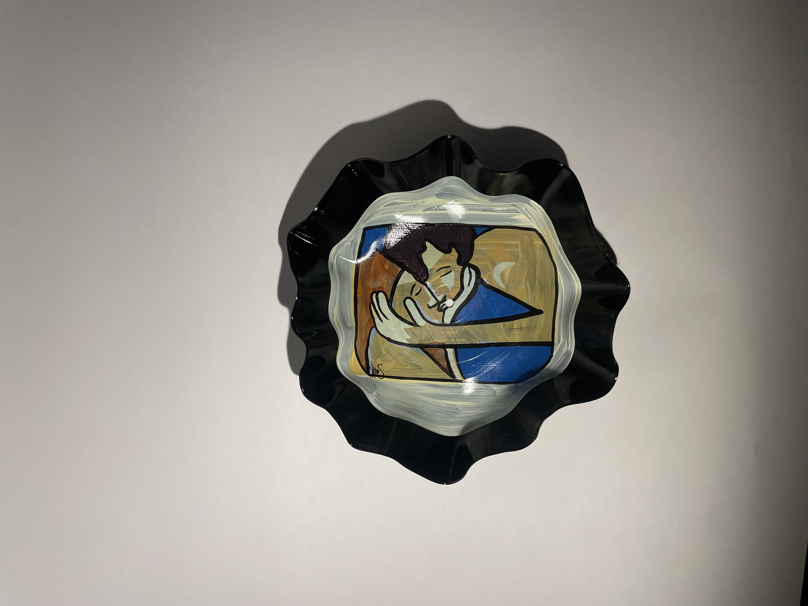
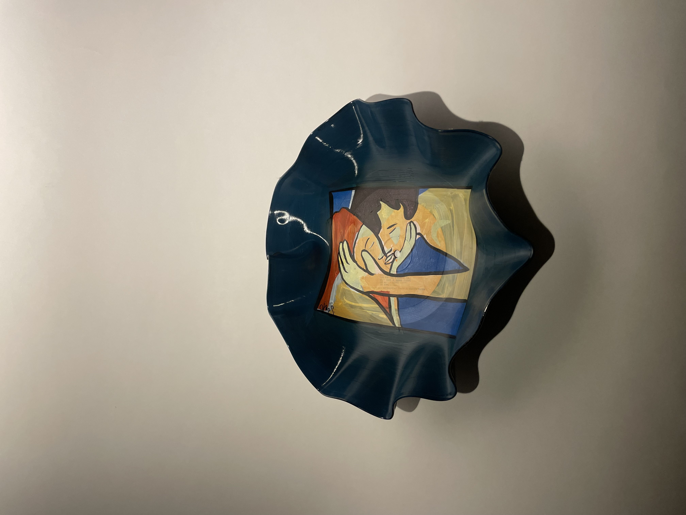
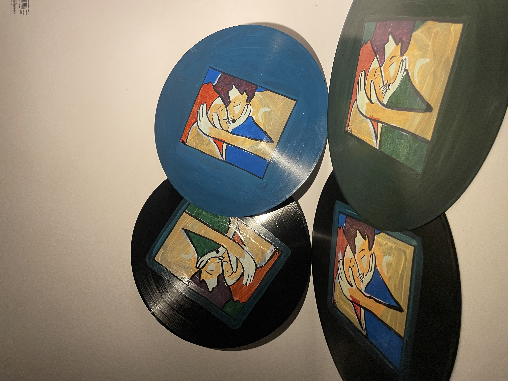

Iris Shero X 33Giri
"METAMORFOSI Metamorfosi nasce con l’intenzione di valorizzare tutto quello che si trasforma e si costruisce nel corso del tempo. Vuole celebrare una visione della vita dinamica e trasformativa, che assapora il presente sempre con una certa coscienza rispetto al futuro. Il bacio, l’opera che ho deciso di riprendere per questa collezione, rappresenta in parte proprio quel desiderio di costruire, di cambiare, di adattarsi ad una nuova realtà, che è associato spesso anche all’amore. In un piano più materiale questa spinta prende vita ogni volta che non ci arrendiamo di fronte a qualcosa che sembra alla fine della propria esistenza o semplicemente fermo. La collaborazione con 33giri è proprio questo: condividere il valore del potenziale progressivo della vita e degli oggetti che la popolano. Una visione che permette di vivere pienamente un amore nel suo presente, ma anche nel suo futuro, e che è capace di vedere in un vecchio vinile apparentemente inutile una nuova forma, e quindi una nuova vita. Niente è definitivamente finito, la forma momentanea della realtà è una delle sue infinite forme possibili, e noi possiamo esplorare quell’infinito attraverso le nostre azioni."
L'Artista

La Visione Artistica
Iris Shero, giovane artista di 22 anni, ha fatto della creatività il fulcro della sua esistenza. La sua identità artistica si è sviluppata attraverso un percorso di profonda introspezione, dove l'arte diventa il mezzo privilegiato per esplorare la complessità delle emozioni umane.
La sua ricerca artistica si concentra sull'accessibilità alle forme più pure delle emozioni, quelle che risuonano nell'intimità dell'essere e rivelano dimensioni della coscienza spesso inesplorate. Attraverso il colore, la composizione e la materializzazione del pensiero, Iris crea opere che trascendono la mera estetica.
Il processo creativo di Iris si articola in trasformazione, progettazione e materializzazione — elementi che danno vita a ciò che prima esisteva solo nell'immaginazione. Le sue opere incarnano un profondo e vivido senso di attaccamento alla vita, celebrando tutte le sfumature dell'esperienza umana.
"I pezzi che amo di più sono quelli che mi fanno provare qualcosa: nelle mie opere quel qualcosa si traduce in un profondo senso di attaccamento alla vita."
Le opere di Iris


Da questi dipinti nasce la serie di vinili unici realizzati insieme a 33Giri: ogni disco viene modellato e dipinto a mano, trasformando l’opera di Iris in un oggetto da usare e da esporre.
I vinili per 33Giri





(per le collaborazioni puoi chiedere il modello specifico o farti consigliare il pezzo giusto)